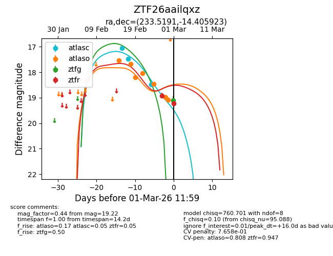
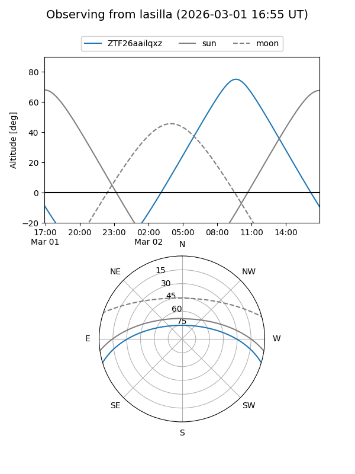
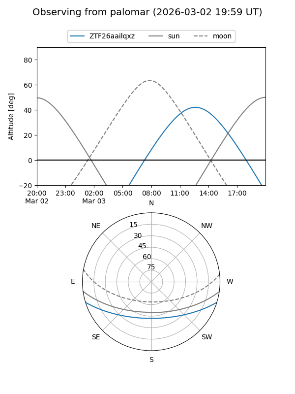
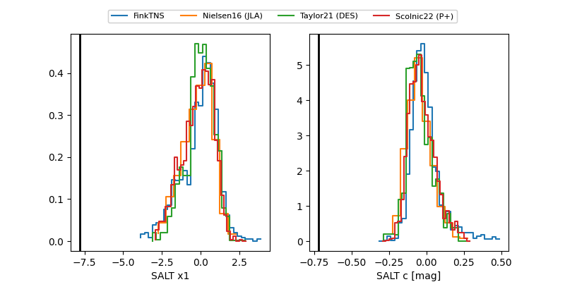

ZTF26aailqxz
Target ZTF26aailqxz at 2026-03-01 12:00
Aliases and brokers:
FINK: link
Lasair: link
ALeRCE: link
alt names
ZTF26aailqxz (ztf,fink_ztf)
Coordinates:
equatorial (ra, dec) = 233.5191,-14.40592
equatorial (HMS+DMS) = 15:34:04.59,-14:24:21.32
galactic (l, b) = (351.5278,+32.71541)
Flags:
likely cv
Photometry:
last atlasc=18.48, atlaso=19.07, ztfg=19.10, ztfr=19.22
3 atlasc, 7 atlaso, 1 ztfg, 2 ztfr detections
Lightcurve

Visibility


Additional plots
